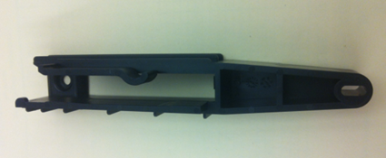
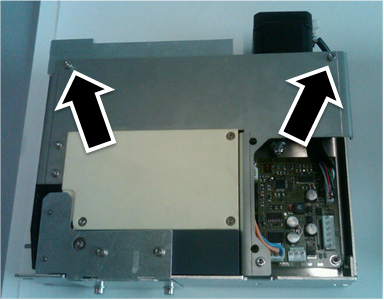
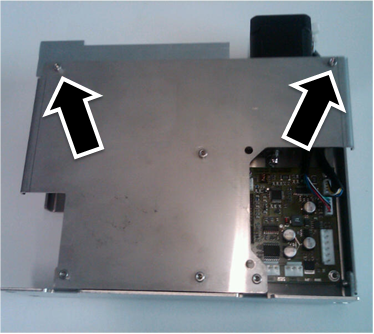
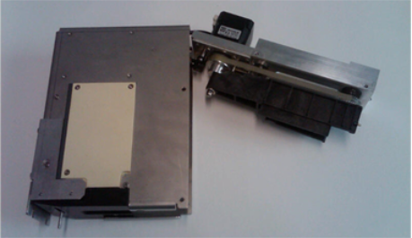
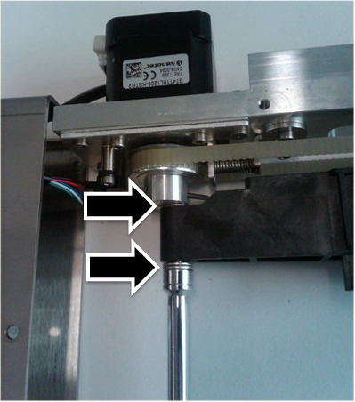
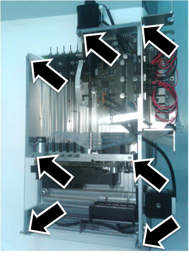
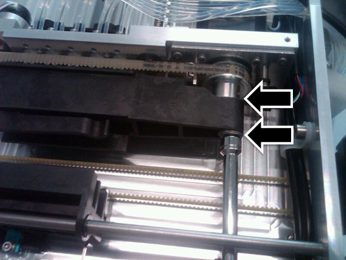
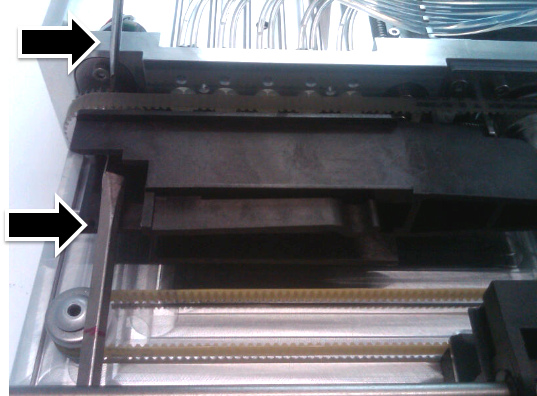

Replace Plastic MTU Carriers
The new MTU Multi-tube unit—Container used to process tests in the instrument. An MTU contains five separate reaction tubes. The MTU is moved through the instrument by the linear distributor and includes five tiplets for pipettiing to be used in the mag wash station. carrier is implemented on Panther Systems above Serial # 00430.
Multi-tube unit—Container used to process tests in the instrument. An MTU contains five separate reaction tubes. The MTU is moved through the instrument by the linear distributor and includes five tiplets for pipettiing to be used in the mag wash station. carrier is implemented on Panther Systems above Serial # 00430.
Panther Systems below Serial # 00431 have MTU carriers that are deformed or too tight. These MTU carriers cause tiplets to pop up and may cause:
- Jams in the Sample Mix Station
- Jams in the MagWash Stations
On Panther Systems below Serial # 00431, replace the MTU carriers on the 3 Load Stations and 2 MagWash Stations with the new-style MTU carrier.
Parts and Materials Required
- Proper PPE
- Absorbent bench pads
- Loctite 243 or equivalent (Optional)
- Needle-nose pliers
- 2 standard (flat) screwdrives
- 2.5 mm hex wrench
- 3 mm hex wrench
- 4 mm hex wrench
- 7 mm hex wrench
-
MTU Carrier

Time Required
- 30 minutes per module
Load Station Procedure
- Put on proper PPE.
- On a bench top, lay out absorbent bench pads for a clean work surface.
- Power down the Panther System.
- Remove the Luminometer injector.
- Open the Service Drawer.
- Remove the selected Load Station referring to appropriate procedure from Load Stations Module Removal and Replacement List.
- Place the removed Load Station on the absorbent bench pads.
- Using a 2.5 mm hex wrench, remove the 2 screws holding the motor block assembly to the module chassis.
 AMP and HPA Hybridization protection assay—The Hologic HPA technique uses a specific DNA probe, labeled with an acridinium ester detector molecule that emits a chemiluminescent signal. Load Station screws.
AMP and HPA Hybridization protection assay—The Hologic HPA technique uses a specific DNA probe, labeled with an acridinium ester detector molecule that emits a chemiluminescent signal. Load Station screws.

- Sample Load Station screws.

- Carefully pull the motor assembly block from the chassis. (AMP and HPA Load Station shown.)
- Be mindful of the attached motor and sensor cables.

- Using a 7 mm socket wrench, remove the Nylock nut holding the back of the black plastic MTU carrier in place.
- Note the 0.1 mm gaps as they must be reproduced during reinstallation.
- Do not lose the washers above and below the carrier.

- Using a standard screwdriver, remove the screw that holds the front of the MTU carrier in place.

Note—Removing this screw may be difficult, as the sprocket rotates with the screw. - Remove the MTU carrier.
Do not lose the washers above and below the carrier.
NOTE—Be careful not to accidentally slip the belt off of the gears. The belt aligns the front gear to the back gear – if the belt slips off either gear, the alignment cannot be guaranteed, and the module must be replaced.
- With the screw from Step 11, apply a small amount of Loctite on the threads and install the new MTU carrier.
- Using a 7 mm socket wrench, reinstall the Nylock nut with washers holding the back of the black plastic MTU carrier in place.
- Leave a 0.1 mm gap similar to the gap at the front screw.
- The gaps between the MTU carrier and the washers should be approximately the same at the front and back.
- By hand, rotate the sprocket, which should spin freely without binding the MTU carrier. Adjust if the sprocket does spin freely.
- Reinstall the motor assembly into the chassis.
- Using a 2.5 mm hex wrench, reinstall the 2 screws holding the motor block assembly to the module chassis.
- Reinstall the selected Load Station referring to appropriate procedure from Load Stations Module Removal and Replacement List.
- Re-teach the Pipettor to the selected Load Station referring to Pipettor Teaching.
- Re-teach the Linear Distributor to the selected Load Station referring to Distributor Alignment and Teaching Procedure.
- Proceed to Verification.
MagWash Station Procedure
- Put on proper PPE.
- On a bench top, lay out absorbent bench pads for a clean work surface.
- Power down the Panther System.
Note—This procedure involves manipulating waste tubing that may contain contaminated material. Take extra care not to expose yourself or the system to contaminants that may be within the waste tubing. Refer to Biohazard Safety Information. - Remove the Luminometer injector.
- Open the Service Drawer.
- Remove the selected MagWash Station referring to Magnetic Wash Station Module Removal and Replacement.
- Carefully, use needle-nose pliers to remove the vacuum tubing.
- Avoiding contamination, place the removed MagWash on the clean absorbent bench pads.
- (Optional) Using a 2.5 mm hex tool, remove the 7 screws on the clear plastic cover on the MagWash.

- Slide the magnet sled forward.
- Using a 7 mm socket wrench, remove the Nylock nut holding the plastic MTU carrier in place.
- Note the 0.1 mm gaps as they must be reproduced during reinstallation.
- Do not lose the washers above and below the carrier. (In the image below, the MTU carrier is hiding the upper washer(s) from view.

- Using a standard screwdriver, remove the screw that holds the front of the MTU carrier in place.
Note—Removing this screw may be difficult, as the sprocket rotates with the screw. - To assist removing the screw, use a second screwdriver to brace the sprocket preventing it from turning.

- To assist removing the screw, use a second screwdriver to brace the sprocket preventing it from turning.
- Remove the MTU carrier.
Do not lose the washers above and below the carrier.
NOTE—Be careful not to accidentally slip the belt off of the gears. The belt aligns the front gear to the back gear – if the belt slips off either gear, the alignment cannot be guaranteed, and the module must be replaced.
- Using a standard screwdriver, reinstall the new MTU carrier with the front screw (with a fresh Loctite application).
- Using a 7 mm socket wrench, reinstall the Nylock nut holding the plastic MTU carrier in place.
- Leave a 0.1 mm gap similar to the gap at the front screw.
- The gaps between the MTU carrier and the washers should be approximately the same at the front and back.
- By hand, rotate the sprocket, which should spin freely without binding the MTU carrier. Adjust if the sprocket does spin freely.
- Reinstall the MagWash referring to Magnetic Wash Station Module Removal and Replacement.
- Re-teach the Linear Distributor to the reinstalled MagWash referring to Distributor Alignment and Teaching Procedure.
Verification
- Perform a System OQ test at every reinstalled Station.
- If the MTU Carrier in a MagWash Station was replaced, perform a MagWash OQ test.
- In Service Software, under the System tab, select the Main tab, select Report, and click Initialize.
- Select MagWash #1 and/or MagWash #2 that were reinstalled.
- Click MagWash OQ Test button.
- Follow the on-screen prompts to complete the MagWash OQ test.
Note—Service Software v0.2.2.0 falsely indicates that the MagWash OQ test has failed. This is a software bug - and should be ignored. Inspect the test report and make sure that all individual sections pass. - Inspect the tubing for kinks or blockage.
- Verification is complete.
 button at the top of the page to send feedback, comments, or change requests.
button at the top of the page to send feedback, comments, or change requests.